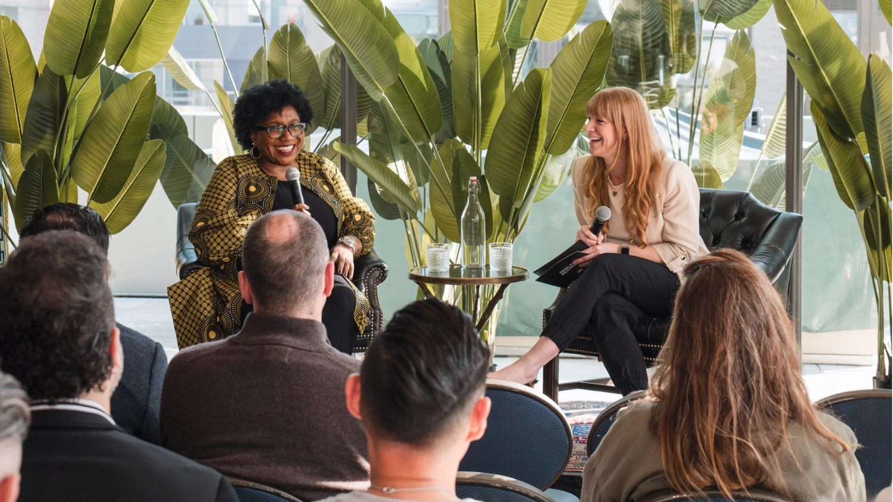
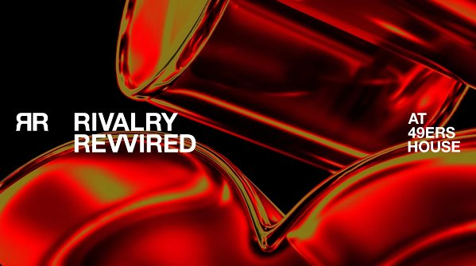

Paid media and ABM strategy across EMEA and NAM, with junior team members coached into activation on both regions.

Coached junior team members in campaign activation for various accounts, including APPLY across EMEA and NAM regions — part of a wider remit advising clients and team on best strategy, tactics and creative ideas to reach KPIs, whether via prospecting, multi-channel integrated campaigns, written content, key industry events, or paid and organic social.
Led cross-functional account teams across content, PR and data, setting the strategy for paid and organic social, email outreach, and campaign content pipelines that supported APPLY's activation across both regions.
One example of the content used through these multi-channel campaigns: "When Competition Loses Meaning, Brands Lose Their Edge" →
